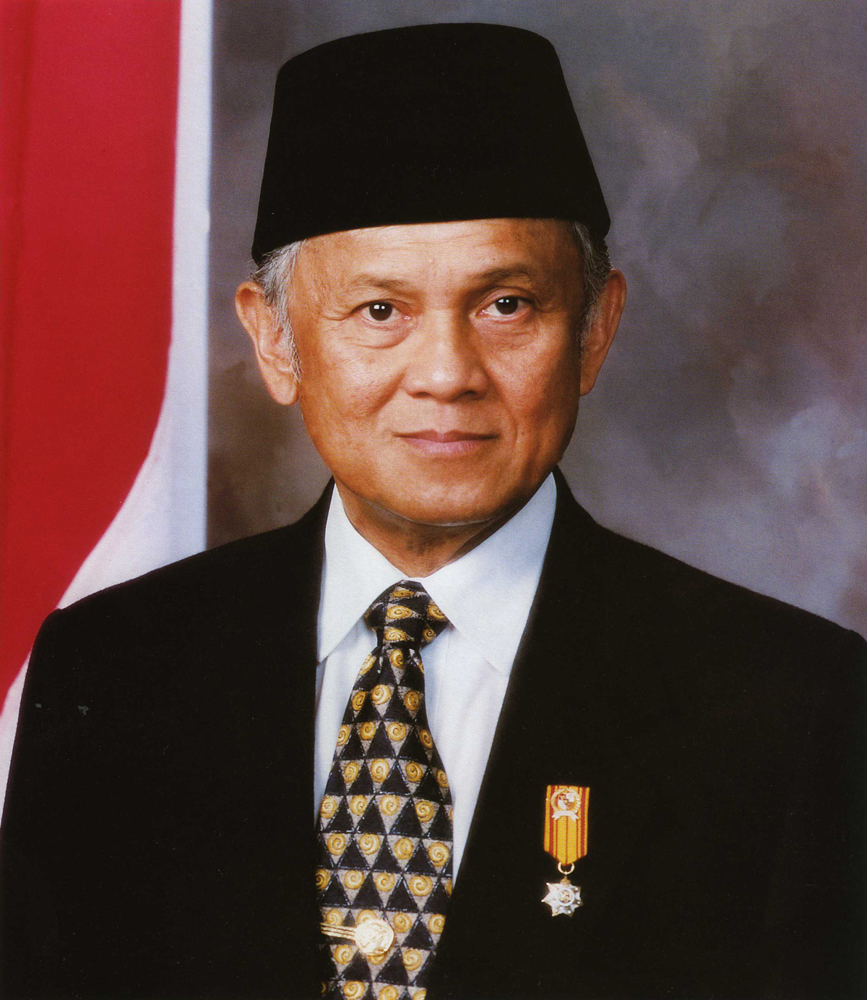

Image Gallery

Soeharto
Soeharto adalah presiden RI yang kedua

Bacharuddin Jusuf Habibie
BJ Habibie adalah presiden RI yang ketiga

KH. Abdurrahman Wahid
KH. Abdurrahman Wahid (Gus Dur) adalah presiden RI yang keempat

Susilo Bambang Yudhoyono
Susilo Bambang Yudhoyono (SBY) adalah presiden RI yang keenam